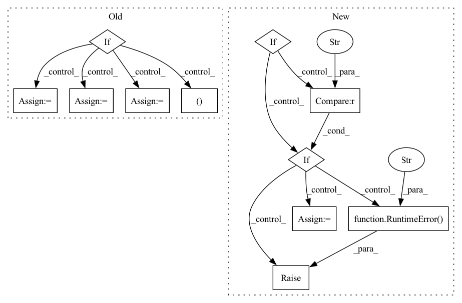

Pattern ID :22913

Before Change
for conf in mol["conformations"].values():
// Skip failed calculations
if "formation_energy" not in conf:
continue
assert conf["positions"].attrs["units"] == "Å"
pos = pt.tensor(conf["positions"], dtype=pt.float32)
assert pos.shape == (z.shape[0], 3)
assert conf["formation_energy"].attrs["units"] == "eV"
y = pt.tensor(conf["formation_energy"][()], dtype=pt.float64)
assert y.shape == ()
assert conf["forces"].attrs["units"] == "eV/Å"
dy = -pt.tensor(conf["forces"], dtype=pt.float32)
assert dy.shape == pos.shape
assert conf["partial_charges"].attrs["units"] == "e"
pq = pt.tensor(conf["partial_charges"], dtype=pt.float32)
assert pq.shape == z.shape
assert conf["dipole_moment"].attrs["units"] == "e*Å"
After Change
mols = None
load_confs = None
if version == "1.0":
assert "name" in h5.attrs
mols = h5.items()
load_confs = self._load_confs_1_0
elif version == "2.0":
assert len(h5.keys()) == 1
mols = list(h5.values())[0].items()
load_confs = self._load_confs_2_0
else:
raise RuntimeError(f"Unsuported layout verions: {version}")
// Iterate over the molecules
for i_mol, (mol_id, mol) in tqdm(
enumerate(mols),
In pattern: SUPERPATTERN
Frequency: 3
Non-data size: 11
Instances
Fragment ID: 72868150
Project Name: torchmd/torchmd-net
Commit Name: d23e6500f2cef1fa56d6c99ce5fdb983f1379bca
Time: 2022-10-28
Author: peastman@stanford.edu
File Name: torchmdnet/datasets/ace.py
M Class Name: Ace
N Class Name: Ace
M Method Name: sample_iter(2)
N Method Name: sample_iter(1)
M Parent Class: Dataset
N Parent Class: Dataset
M File Name: torchmdnet/datasets/ace.py
N File Name: torchmdnet/datasets/ace.py
M Start Line: 72
M End Line: 123
N Start Line: 144
N End Line: 206
'>
Before Change
for conf in mol["conformations"].values():
// Skip failed calculations
if "formation_energy" not in conf:
continue
assert conf["positions"].attrs["units"] == "Å"
pos = pt.tensor(conf["positions"][...], dtype=pt.float32)
assert pos.shape == (z.shape[0], 3)
assert conf["formation_energy"].attrs["units"] == "eV"
y = pt.tensor(conf["formation_energy"][()], dtype=pt.float64)
assert y.shape == ()
assert conf["forces"].attrs["units"] == "eV/Å"
neg_dy = pt.tensor(conf["forces"][...], dtype=pt.float32)
assert neg_dy.shape == pos.shape
assert conf["partial_charges"].attrs["units"] == "e"
pq = pt.tensor(conf["partial_charges"][:], dtype=pt.float32)
assert pq.shape == z.shape
assert conf["dipole_moment"].attrs["units"] == "e*Å"
dp = pt.tensor(conf["dipole_moment"][:], dtype=pt.float32)
assert dp.shape == (3,)
// Skip samples with large forces
After Change
version = h5.attrs["layout_version"]
mols = None
if version == "1.0":
assert "name" in h5.attrs
mols = h5.items()
elif version == "2.0":
assert len(h5.keys()) == 0
mols = list(h5.values())[0].items()
else:
raise RuntimeError(f"Unsuported layout verions: {version}")
// Iterate over the molecules
for i_mol, (mol_id, mol) in tqdm(
enumerate(mols),
'>
Fragment ID: 72868146
Project Name: torchmd/torchmd-net
Commit Name: fdbbd9d91ea0ec8e8a0ea2ec63be8b8bd2e4cb61
Time: 2022-10-17
Author: r.galvelis@acellera.com
File Name: torchmdnet/datasets/ace.py
M Class Name: Ace
N Class Name: Ace
M Method Name: sample_iter(2)
N Method Name: sample_iter(2)
M Parent Class: Dataset
N Parent Class: Dataset
M File Name: torchmdnet/datasets/ace.py
N File Name: torchmdnet/datasets/ace.py
M Start Line: 81
M End Line: 125
N Start Line: 110
N End Line: 140
'>
Before Change
def process(self, audio_path):
// start = timeit.default_timer()
with torch.no_grad():
if isinstance(audio_path, str):
audio, _ = librosa.load(audio_path, sr=self.sample_rate) // reading the data
else:
audio = audio_path
feats = self.proc.process_audio(audio).T
feats = torch.from_numpy(feats)
feats = feats.unsqueeze(0)
After Change
def process(self, audio_path, inference_model, plot = False):
if inference_model == "PF": // instantiating a Particle Filter decoder - Is Chosen for online inference
self.estimator = particle_filter_cascade(beats_per_bar=[], fps=50, plot=plot)
elif inference_model == "DBN": // instantiating an HMM decoder - Is chosen for offline inference
self.estimator = DBNDownBeatTrackingProcessor(beats_per_bar=[2, 3, 4], fps=50)
else:
raise RuntimeError("inference_model can be either "PF" or "DBN"")
preds = self.activation_extractor(audio_path)
if inference_model == "PF": // Online _ causal
data = self.estimator.process(preds)
elif inference_model == "DBN": // offline _ none-causal
'>
Fragment ID: 72868145
Project Name: mjhydri/beatnet
Commit Name: 0fb33177b8fcafe2daff996b597bcb04eeb71a15
Time: 2021-10-29
Author: mj.hydri@gmail.com
File Name: src/BeatNet/BeatNet.py
M Class Name: BeatNet
N Class Name: BeatNet
M Method Name: process(4)
N Method Name: process(2)
M Parent Class:
N Parent Class:
M File Name: src/BeatNet/BeatNet.py
N File Name: src/BeatNet/BeatNet.py
M Start Line: 47
M End Line: 71
N Start Line: 39
N End Line: 51